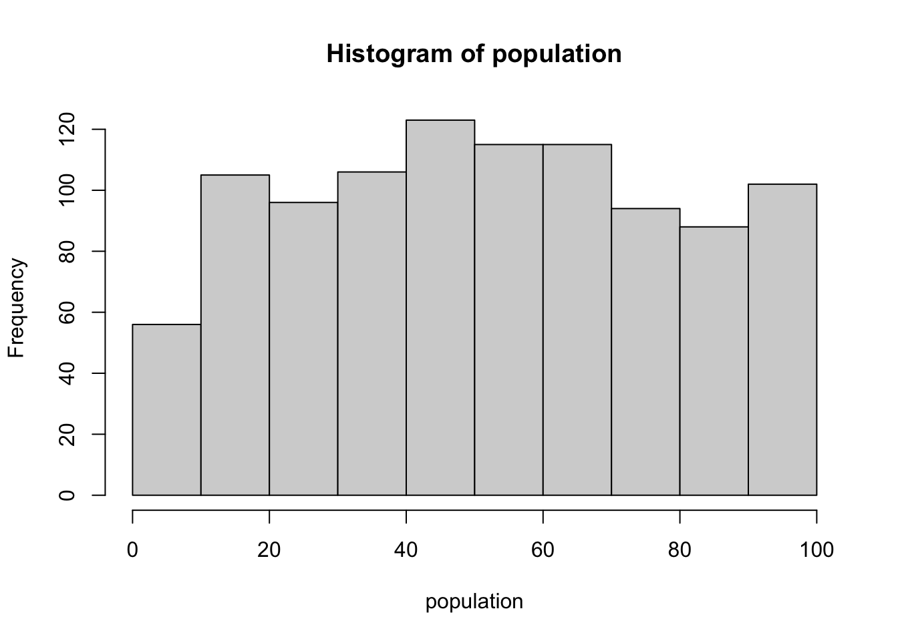
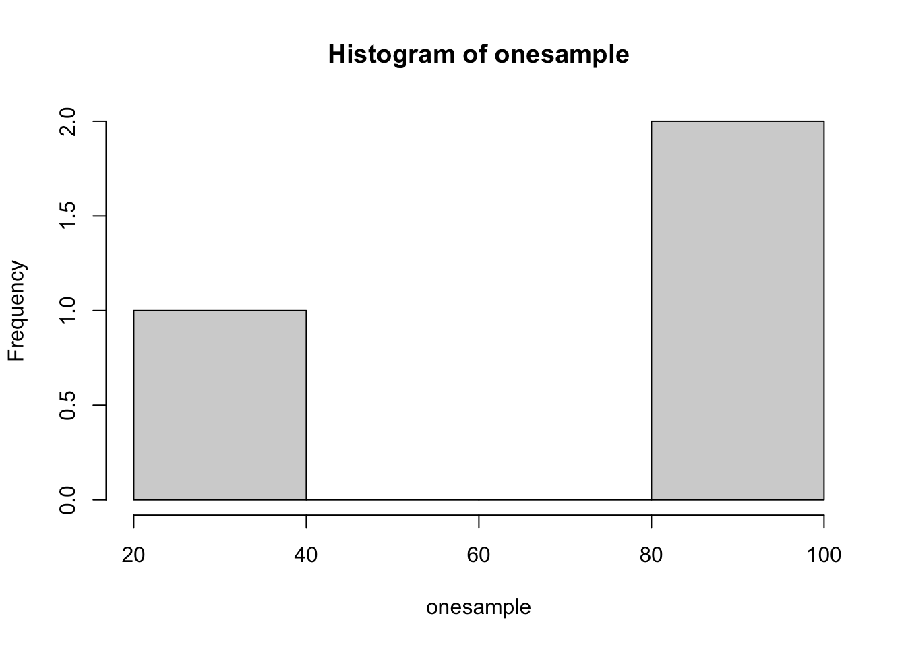
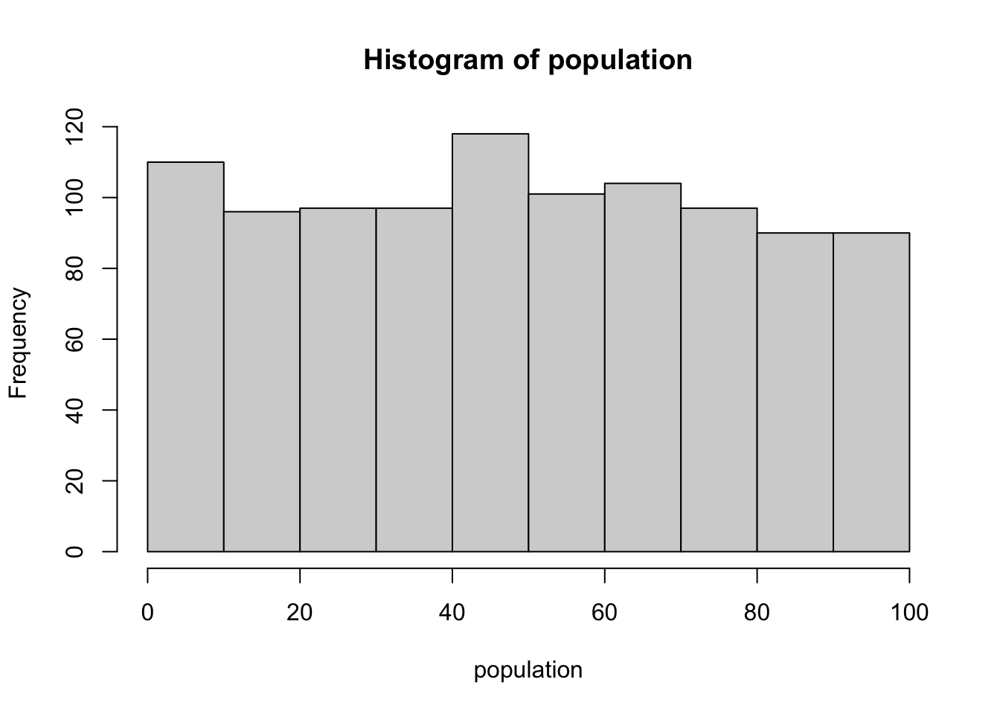
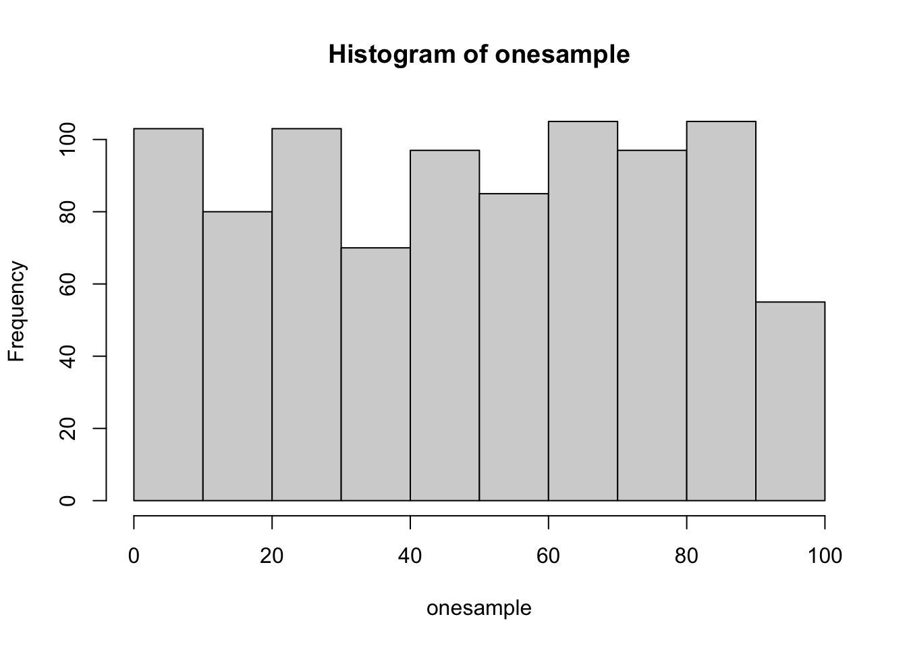
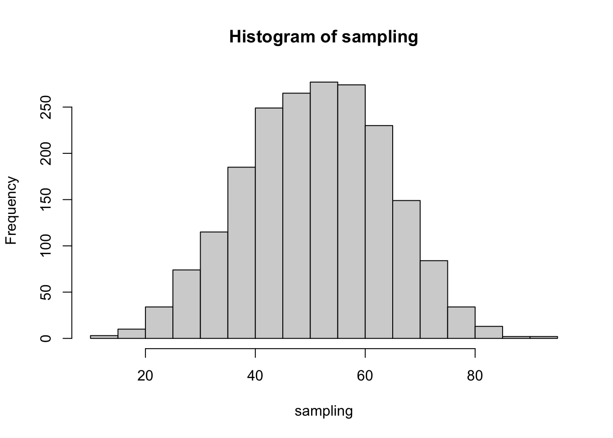

Chapter 4 Inferential statistics: The Central Limit Theorem
4.2 Introduction
The role of descriptive statistics is to concisely summarise what we do know. In contrast, the purpose of inferential statistics is to “learn what we do not know from what we do.” We are in a good position to think about the problem of statistical inference. What kinds of things would we like to learn about? And how do we learn them? These are the questions that lie at the heart of inferential statistics, and they are traditionally divided into two “big ideas”: estimation and hypothesis testing. The goal in this chapter is to introduce the first of these big ideas, estimation theory, but I’m going to witter on about probability and sampling theory first because estimation theory doesn’t make sense until you understand probability and sampling . As a consequence, this chapter divides naturally into two parts Sections 4.5 through 4.7 are focused on sampling theory, and Sections 4.8 and 4.9 make use of sampling theory to discuss how statisticians think about estimation.
4.3 How are probability and statistics different?
Text by Navarro (2018) Before we start talking about probability theory, it’s helpful to spend a moment thinking about the relationship between probability and statistics. The two disciplines are closely related but they’re not identical. Probability theory is “the doctrine of chances.” It’s a branch of mathematics that tells you how often different kinds of events will happen. For example, all of these questions are things you can answer using probability theory:
- What are the chances of a fair coin coming up heads 10 times in a row?
- If I roll two six sided dice, how likely is it that I’ll roll two sixes?
- How likely is it that five cards drawn from a perfectly shuffled deck will all be hearts?
- What are the chances that I’ll win the lottery?
Notice that all of these questions have something in common. In each case the “truth of the world” is known, and my question relates to the “what kind of events” will happen. In the first question I know that the coin is fair, so there’s a 50% chance that any individual coin flip will come up heads. In the second question, I know that the chance of rolling a 6 on a single die is 1 in 6. In the third question I know that the deck is shuffled properly. And in the fourth question, I know that the lottery follows specific rules. You get the idea. The critical point is that probabilistic questions start with a known model of the world, and we use that model to do some calculations. The underlying model can be quite simple. For instance, in the coin flipping example, we can write down the model like this: \[ P(\mbox{heads}) = 0.5 \] which you can read as “the probability of heads is 0.5.” As we’ll see later, in the same way that percentages are numbers that range from 0% to 100%, probabilities are just numbers that range from 0 to 1. When using this probability model to answer the first question, I don’t actually know exactly what’s going to happen. Maybe I’ll get 10 heads, like the question says. But maybe I’ll get three heads. That’s the key thing: in probability theory, the model is known, but the data are not.
So that’s probability. What about statistics? Statistical questions work the other way around. In statistics, we do not know the truth about the world. All we have is the data, and it is from the data that we want to learn the truth about the world. Statistical questions tend to look more like these:
- If my friend flips a coin 10 times and gets 10 heads, are they playing a trick on me?
- If five cards off the top of the deck are all hearts, how likely is it that the deck was shuffled? - If the lottery commissioner’s spouse wins the lottery, how likely is it that the lottery was rigged?
This time around, the only thing we have are data. What I know is that I saw my friend flip the coin 10 times and it came up heads every time. And what I want to infer is whether or not I should conclude that what I just saw was actually a fair coin being flipped 10 times in a row, or whether I should suspect that my friend is playing a trick on me. The data I have look like this:
H H H H H H H H H H Hand what I’m trying to do is work out which “model of the world” I should put my trust in. If the coin is fair, then the model I should adopt is one that says that the probability of heads is 0.5; that is, \(P(\mbox{heads}) = 0.5\). If the coin is not fair, then I should conclude that the probability of heads is not 0.5, which we would write as \(P(\mbox{heads}) \neq 0.5\). In other words, the statistical inference problem is to figure out which of these probability models is right. Clearly, the statistical question isn’t the same as the probability question, but they’re deeply connected to one another. Because of this, a good introduction to statistical theory will start with a discussion of what probability is and how it works.
4.4 What does probability mean?
Let’s start with the first of these questions. What is “probability?” It might seem surprising to you, but while statisticians and mathematicians (mostly) agree on what the rules of probability are, there’s much less of a consensus on what the word really means. It seems weird because we’re all very comfortable using words like “chance,” “likely,” “possible” and “probable,” and it doesn’t seem like it should be a very difficult question to answer. If you had to explain “probability” to a five year old, you could do a pretty good job. But if you’ve ever had that experience in real life, you might walk away from the conversation feeling like you didn’t quite get it right, and that (like many everyday concepts) it turns out that you don’t really know what it’s all about.
So I’ll have a go at it. Let’s suppose I want to bet on a soccer game between two teams of robots, Arduino Arsenal and C Milan. After thinking about it, I decide that there is an 80% probability that Arduino Arsenal winning. What do I mean by that? Here are three possibilities…
- They’re robot teams, so I can make them play over and over again, and if I did that, Arduino Arsenal would win 8 out of every 10 games on average.
- For any given game, I would only agree that betting on this game is only “fair” if a $1 bet on C Milan gives a $5 payoff (i.e. I get my $1 back plus a $4 reward for being correct), as would a $4 bet on Arduino Arsenal (i.e., my $4 bet plus a $1 reward).
- My subjective “belief” or “confidence” in an Arduino Arsenal victory is four times as strong as my belief in a C Milan victory.
Each of these seems sensible. However they’re not identical, and not every statistician would endorse all of them. The reason is that there are different statistical ideologies (yes, really!) and depending on which one you subscribe to, you might say that some of those statements are meaningless or irrelevant. In this section, I give a brief introduction the two main approaches that exist in the literature. These are by no means the only approaches, but they’re the two big ones.
4.4.1 The frequentist view
The first of the two major approaches to probability, and the more dominant one in statistics, is referred to as the frequentist view, and it defines probability as a long-run frequency. Suppose we were to try flipping a fair coin, over and over again. By definition, this is a coin that has \(P(H) = 0.5\). What might we observe? One possibility is that the first 20 flips might look like this:
T,H,H,H,H,T,T,H,H,H,H,T,H,H,T,T,T,T,T,HIn this case 11 of these 20 coin flips (55%) came up heads. Now suppose that I’d been keeping a running tally of the number of heads (which I’ll call \(N_H\)) that I’ve seen, across the first \(N\) flips, and calculate the proportion of heads \(N_H / N\) every time. Here’s what I’d get (I did literally flip coins to produce this!):
| number.of.flips | number.of.heads | proportion |
|---|---|---|
| 1 | 0 | 0.00 |
| 2 | 1 | 0.50 |
| 3 | 2 | 0.67 |
| 4 | 3 | 0.75 |
| 5 | 4 | 0.80 |
| 6 | 4 | 0.67 |
| 7 | 4 | 0.57 |
| 8 | 5 | 0.63 |
| 9 | 6 | 0.67 |
| 10 | 7 | 0.70 |
| 11 | 8 | 0.73 |
| 12 | 8 | 0.67 |
| 13 | 9 | 0.69 |
| 14 | 10 | 0.71 |
| 15 | 10 | 0.67 |
| 16 | 10 | 0.63 |
| 17 | 10 | 0.59 |
| 18 | 10 | 0.56 |
| 19 | 10 | 0.53 |
| 20 | 11 | 0.55 |
Notice that at the start of the sequence, the proportion of heads fluctuates wildly, starting at .00 and rising as high as .80. Later on, one gets the impression that it dampens out a bit, with more and more of the values actually being pretty close to the “right” answer of .50. This is the frequentist definition of probability in a nutshell: flip a fair coin over and over again, and as \(N\) grows large (approaches infinity, denoted \(N\rightarrow \infty\)), the proportion of heads will converge to 50%. There are some subtle technicalities that the mathematicians care about, but qualitatively speaking, that’s how the frequentists define probability. Unfortunately, I don’t have an infinite number of coins, or the infinite patience required to flip a coin an infinite number of times. However, I do have a computer, and computers excel at mindless repetitive tasks. So I asked my computer to simulate flipping a coin 1000 times, and then drew a picture of what happens to the proportion \(N_H / N\) as \(N\) increases. Actually, I did it four times, just to make sure it wasn’t a fluke. The results are shown in Figure 4.1. As you can see, the proportion of observed heads eventually stops fluctuating, and settles down; when it does, the number at which it finally settles is the true probability of heads.
![An illustration of how frequentist probability works. If you flip a fair coin over and over again, the proportion of heads that you've seen eventually settles down, and converges to the true probability of 0.5. Each panel shows four different simulated experiments: in each case, we pretend we flipped a coin 1000 times, and kept track of the proportion of flips that were heads as we went along. Although none of these sequences actually ended up with an exact value of .5, if we'd extended the experiment for an infinite number of coin flips they would have.](schuster-statistics-remix_files/figure-html/frequentistprobability-1.png)
Figure 4.1: An illustration of how frequentist probability works. If you flip a fair coin over and over again, the proportion of heads that you’ve seen eventually settles down, and converges to the true probability of 0.5. Each panel shows four different simulated experiments: in each case, we pretend we flipped a coin 1000 times, and kept track of the proportion of flips that were heads as we went along. Although none of these sequences actually ended up with an exact value of .5, if we’d extended the experiment for an infinite number of coin flips they would have.
The frequentist definition of probability has some desirable characteristics. Firstly, it is objective: the probability of an event is necessarily grounded in the world. The only way that probability statements can make sense is if they refer to (a sequence of) events that occur in the physical universe.80 Secondly, it is unambiguous: any two people watching the same sequence of events unfold, trying to calculate the probability of an event, must inevitably come up with the same answer. However, it also has undesirable characteristics. Firstly, infinite sequences don’t exist in the physical world. Suppose you picked up a coin from your pocket and started to flip it. Every time it lands, it impacts on the ground. Each impact wears the coin down a bit; eventually, the coin will be destroyed. So, one might ask whether it really makes sense to pretend that an “infinite” sequence of coin flips is even a meaningful concept, or an objective one. We can’t say that an “infinite sequence” of events is a real thing in the physical universe, because the physical universe doesn’t allow infinite anything. More seriously, the frequentist definition has a narrow scope. There are lots of things out there that human beings are happy to assign probability to in everyday language, but cannot (even in theory) be mapped onto a hypothetical sequence of events. For instance, if a meteorologist comes on TV and says, “the probability of rain in Adelaide on 2 November 2048 is 60%” we humans are happy to accept this. But it’s not clear how to define this in frequentist terms. There’s only one city of Adelaide, and only 2 November 2048. There’s no infinite sequence of events here, just a once-off thing. Frequentist probability genuinely forbids us from making probability statements about a single event. From the frequentist perspective, it will either rain tomorrow or it will not; there is no “probability” that attaches to a single non-repeatable event. Now, it should be said that there are some very clever tricks that frequentists can use to get around this. One possibility is that what the meteorologist means is something like this: “There is a category of days for which I predict a 60% chance of rain; if we look only across those days for which I make this prediction, then on 60% of those days it will actually rain.” It’s very weird and counterintuitive to think of it this way, but you do see frequentists do this sometimes. And it will come up later in this book (see Section 4.9).
4.4.2 The Bayesian view
The Bayesian view of probability is often called the subjectivist view, and it is a minority view among statisticians, but one that has been steadily gaining traction for the last several decades. There are many flavours of Bayesianism, making hard to say exactly what “the” Bayesian view is. The most common way of thinking about subjective probability is to define the probability of an event as the degree of belief that an intelligent and rational agent assigns to that truth of that event. From that perspective, probabilities don’t exist in the world, but rather in the thoughts and assumptions of people and other intelligent beings. However, in order for this approach to work, we need some way of operationalising “degree of belief.” One way that you can do this is to formalise it in terms of “rational gambling,” though there are many other ways. Suppose that I believe that there’s a 60% probability of rain tomorrow. If someone offers me a bet: if it rains tomorrow, then I win $5, but if it doesn’t rain then I lose $5. Clearly, from my perspective, this is a pretty good bet. On the other hand, if I think that the probability of rain is only 40%, then it’s a bad bet to take. Thus, we can operationalise the notion of a “subjective probability” in terms of what bets I’m willing to accept.
What are the advantages and disadvantages to the Bayesian approach? The main advantage is that it allows you to assign probabilities to any event you want to. You don’t need to be limited to those events that are repeatable. The main disadvantage (to many people) is that we can’t be purely objective – specifying a probability requires us to specify an entity that has the relevant degree of belief. This entity might be a human, an alien, a robot, or even a statistician, but there has to be an intelligent agent out there that believes in things. To many people this is uncomfortable: it seems to make probability arbitrary. While the Bayesian approach does require that the agent in question be rational (i.e., obey the rules of probability), it does allow everyone to have their own beliefs; I can believe the coin is fair and you don’t have to, even though we’re both rational. The frequentist view doesn’t allow any two observers to attribute different probabilities to the same event: when that happens, then at least one of them must be wrong. The Bayesian view does not prevent this from occurring. Two observers with different background knowledge can legitimately hold different beliefs about the same event. In short, where the frequentist view is sometimes considered to be too narrow (forbids lots of things that that we want to assign probabilities to), the Bayesian view is sometimes thought to be too broad (allows too many differences between observers).
4.4.3 What’s the difference? And who is right?
Now that you’ve seen each of these two views independently, it’s useful to make sure you can compare the two. Go back to the hypothetical robot soccer game at the start of the section. What do you think a frequentist and a Bayesian would say about these three statements? Which statement would a frequentist say is the correct definition of probability? Which one would a Bayesian do? Would some of these statements be meaningless to a frequentist or a Bayesian? If you’ve understood the two perspectives, you should have some sense of how to answer those questions.
Okay, assuming you understand the different, you might be wondering which of them is right? Honestly, I don’t know that there is a right answer. As far as I can tell there’s nothing mathematically incorrect about the way frequentists think about sequences of events, and there’s nothing mathematically incorrect about the way that Bayesians define the beliefs of a rational agent. In fact, when you dig down into the details, Bayesians and frequentists actually agree about a lot of things. Many frequentist methods lead to decisions that Bayesians agree a rational agent would make. Many Bayesian methods have very good frequentist properties.
For the most part, I’m a pragmatist so I’ll use any statistical method that I trust. As it turns out, that makes me prefer Bayesian methods, for reasons I’ll explain towards the end of the book, but I’m not fundamentally opposed to frequentist methods. Not everyone is quite so relaxed. For instance, consider Sir Ronald Fisher, one of the towering figures of 20th century statistics and a vehement opponent to all things Bayesian, whose paper on the mathematical foundations of statistics referred to Bayesian probability as “an impenetrable jungle [that] arrests progress towards precision of statistical concepts” Fisher (1922). Or the psychologist Paul Meehl, who suggests that relying on frequentist methods could turn you into “a potent but sterile intellectual rake who leaves in his merry path a long train of ravished maidens but no viable scientific offspring” Meehl (1967). The history of statistics, as you might gather, is not devoid of entertainment.
In any case, while I personally prefer the Bayesian view, the majority of statistical analyses are based on the frequentist approach. My reasoning is pragmatic: the goal of this book is to cover roughly the same territory as a typical undergraduate stats class in psychology, and if you want to understand the statistical tools used by most psychologists, you’ll need a good grasp of frequentist methods. I promise you that this isn’t wasted effort. Even if you end up wanting to switch to the Bayesian perspective, you really should read through at least one book on the “orthodox” frequentist view. And since R is the most widely used statistical language for Bayesians, you might as well read a book that uses R. Besides, I won’t completely ignore the Bayesian perspective. Every now and then I’ll add some commentary from a Bayesian point of view.
4.5 Samples, populations and sampling
In the prelude to Part I discussed the riddle of induction, and highlighted the fact that all learning requires you to make assumptions. Accepting that this is true, our first task to come up with some fairly general assumptions about data that make sense. This is where sampling theory comes in. If probability theory is the foundations upon which all statistical theory builds, sampling theory is the frame around which you can build the rest of the house. Sampling theory plays a huge role in specifying the assumptions upon which your statistical inferences rely. And in order to talk about “making inferences” the way statisticians think about it, we need to be a bit more explicit about what it is that we’re drawing inferences from (the sample) and what it is that we’re drawing inferences about (the population).
In almost every situation of interest, what we have available to us as researchers is a sample of data. We might have run experiment with some number of participants; a polling company might have phoned some number of people to ask questions about voting intentions; etc. Regardless: the data set available to us is finite, and incomplete. We can’t possibly get every person in the world to do our experiment; a polling company doesn’t have the time or the money to ring up every voter in the country etc. In our earlier discussion of descriptive statistics (Chapter 3, this sample was the only thing we were interested in. Our only goal was to find ways of describing, summarising and graphing that sample. This is about to change.
4.5.1 Defining a population
A sample is a concrete thing. You can open up a data file, and there’s the data from your sample. A population, on the other hand, is a more abstract idea. It refers to the set of all possible people, or all possible observations, that you want to draw conclusions about, and is generally much bigger than the sample. In an ideal world, the researcher would begin the study with a clear idea of what the population of interest is, since the process of designing a study and testing hypotheses about the data that it produces does depend on the population about which you want to make statements. However, that doesn’t always happen in practice: usually the researcher has a fairly vague idea of what the population is and designs the study as best he/she can on that basis.
Sometimes it’s easy to state the population of interest. For instance, in the “polling company” example that opened the chapter, the population consisted of all voters enrolled at the a time of the study – millions of people. The sample was a set of 1000 people who all belong to that population. In most situations the situation is much less simple. In a typical a psychological experiment, determining the population of interest is a bit more complicated. Suppose I run an experiment using 100 undergraduate students as my participants. My goal, as a cognitive scientist, is to try to learn something about how the mind works. So, which of the following would count as “the population”:
- All of the undergraduate psychology students at the University of Adelaide?
- Undergraduate psychology students in general, anywhere in the world?
- Australians currently living?
- Australians of similar ages to my sample?
- Anyone currently alive?
- Any human being, past, present or future?
- Any biological organism with a sufficient degree of intelligence operating in a terrestrial environment?
- Any intelligent being?
Each of these defines a real group of mind-possessing entities, all of which might be of interest to me as a cognitive scientist, and it’s not at all clear which one ought to be the true population of interest. As another example, consider the Wellesley-Croker game that we discussed in the prelude. The sample here is a specific sequence of 12 wins and 0 losses for Wellesley. What is the population?
- All outcomes until Wellesley and Croker arrived at their destination?
- All outcomes if Wellesley and Croker had played the game for the rest of their lives?
- All outcomes if Wellseley and Croker lived forever and played the game until the world ran out of hills?
- All outcomes if we created an infinite set of parallel universes and the Wellesely/Croker pair made guesses about the same 12 hills in each universe?
Again, it’s not obvious what the population is.
4.5.2 Simple random samples

Figure 4.2: Simple random sampling without replacement from a finite population
Irrespective of how I define the population, the critical point is that the sample is a subset of the population, and our goal is to use our knowledge of the sample to draw inferences about the properties of the population. The relationship between the two depends on the procedure by which the sample was selected. This procedure is referred to as a sampling method, and it is important to understand why it matters.
To keep things simple, let’s imagine that we have a bag containing 10 chips. Each chip has a unique letter printed on it, so we can distinguish between the 10 chips. The chips come in two colours, black and white. This set of chips is the population of interest, and it is depicted graphically on the left of Figure 4.2. As you can see from looking at the picture, there are 4 black chips and 6 white chips, but of course in real life we wouldn’t know that unless we looked in the bag. Now imagine you run the following “experiment”: you shake up the bag, close your eyes, and pull out 4 chips without putting any of them back into the bag. First out comes the \(a\) chip (black), then the \(c\) chip (white), then \(j\) (white) and then finally \(b\) (black). If you wanted, you could then put all the chips back in the bag and repeat the experiment, as depicted on the right hand side of Figure 4.2. Each time you get different results, but the procedure is identical in each case. The fact that the same procedure can lead to different results each time, we refer to it as a random process.81 However, because we shook the bag before pulling any chips out, it seems reasonable to think that every chip has the same chance of being selected. A procedure in which every member of the population has the same chance of being selected is called a simple random sample. The fact that we did not put the chips back in the bag after pulling them out means that you can’t observe the same thing twice, and in such cases the observations are said to have been sampled without replacement.
To help make sure you understand the importance of the sampling procedure, consider an alternative way in which the experiment could have been run. Suppose that my 5-year old son had opened the bag, and decided to pull out four black chips without putting any of them back in the bag. This biased sampling scheme is depicted in Figure 4.3. Now consider the evidentiary value of seeing 4 black chips and 0 white chips. Clearly, it depends on the sampling scheme, does it not? If you know that the sampling scheme is biased to select only black chips, then a sample that consists of only black chips doesn’t tell you very much about the population! For this reason, statisticians really like it when a data set can be considered a simple random sample, because it makes the data analysis much easier.

Figure 4.3: Biased sampling without replacement from a finite population
Figure 4.4: Simple random sampling with replacement from a finite population
A third procedure is worth mentioning. This time around we close our eyes, shake the bag, and pull out a chip. This time, however, we record the observation and then put the chip back in the bag. Again we close our eyes, shake the bag, and pull out a chip. We then repeat this procedure until we have 4 chips. Data sets generated in this way are still simple random samples, but because we put the chips back in the bag immediately after drawing them it is referred to as a sample with replacement. The difference between this situation and the first one is that it is possible to observe the same population member multiple times, as illustrated in Figure 4.4.
In my experience, most psychology experiments tend to be sampling without replacement, because the same person is not allowed to participate in the experiment twice. However, most statistical theory is based on the assumption that the data arise from a simple random sample with replacement. In real life, this very rarely matters. If the population of interest is large (e.g., has more than 10 entities!) the difference between sampling with- and without- replacement is too small to be concerned with. The difference between simple random samples and biased samples, on the other hand, is not such an easy thing to dismiss.
4.5.3 Most samples are not simple random samples
As you can see from looking at the list of possible populations that I showed above, it is almost impossible to obtain a simple random sample from most populations of interest. When I run experiments, I’d consider it a minor miracle if my participants turned out to be a random sampling of the undergraduate psychology students at Adelaide university, even though this is by far the narrowest population that I might want to generalise to. A thorough discussion of other types of sampling schemes is beyond the scope of this book, but to give you a sense of what’s out there I’ll list a few of the more important ones:
- Stratified sampling. Suppose your population is (or can be) divided into several different subpopulations, or strata. Perhaps you’re running a study at several different sites, for example. Instead of trying to sample randomly from the population as a whole, you instead try to collect a separate random sample from each of the strata. Stratified sampling is sometimes easier to do than simple random sampling, especially when the population is already divided into the distinct strata. It can also be more efficient that simple random sampling, especially when some of the subpopulations are rare. For instance, when studying schizophrenia it would be much better to divide the population into two82 strata (schizophrenic and not-schizophrenic), and then sample an equal number of people from each group. If you selected people randomly, you would get so few schizophrenic people in the sample that your study would be useless. This specific kind of of stratified sampling is referred to as oversampling because it makes a deliberate attempt to over-represent rare groups.
- Snowball sampling is a technique that is especially useful when sampling from a “hidden” or hard to access population, and is especially common in social sciences. For instance, suppose the researchers want to conduct an opinion poll among transgender people. The research team might only have contact details for a few trans folks, so the survey starts by asking them to participate (stage 1). At the end of the survey, the participants are asked to provide contact details for other people who might want to participate. In stage 2, those new contacts are surveyed. The process continues until the researchers have sufficient data. The big advantage to snowball sampling is that it gets you data in situations that might otherwise be impossible to get any. On the statistical side, the main disadvantage is that the sample is highly non-random, and non-random in ways that are difficult to address. On the real life side, the disadvantage is that the procedure can be unethical if not handled well, because hidden populations are often hidden for a reason. I chose transgender people as an example here to highlight this: if you weren’t careful you might end up outing people who don’t want to be outed (very, very bad form), and even if you don’t make that mistake it can still be intrusive to use people’s social networks to study them. It’s certainly very hard to get people’s informed consent before contacting them, yet in many cases the simple act of contacting them and saying “hey we want to study you” can be hurtful. Social networks are complex things, and just because you can use them to get data doesn’t always mean you should.
- Convenience sampling is more or less what it sounds like. The samples are chosen in a way that is convenient to the researcher, and not selected at random from the population of interest. Snowball sampling is one type of convenience sampling, but there are many others. A common example in psychology are studies that rely on undergraduate psychology students. These samples are generally non-random in two respects: firstly, reliance on undergraduate psychology students automatically means that your data are restricted to a single subpopulation. Secondly, the students usually get to pick which studies they participate in, so the sample is a self selected subset of psychology students not a randomly selected subset. In real life, most studies are convenience samples of one form or another. This is sometimes a severe limitation, but not always.
Dave here, adding two more sampling methods:
Systematic sampling: Starting from a random point, select every Nth participant.
Cluster sampling: Divide population into clusters or units (such as schools), take a random sample of the clusters (i.e., randomly select a school) and then measure all the participants within the cluster (i.e., measure every student in the school).
4.5.4 How much does it matter if you don’t have a simple random sample?
Okay, so real world data collection tends not to involve nice simple random samples. Does that matter? A little thought should make it clear to you that it can matter if your data are not a simple random sample: just think about the difference between Figures 4.2 and 4.3. However, it’s not quite as bad as it sounds. Some types of biased samples are entirely unproblematic. For instance, when using a stratified sampling technique you actually know what the bias is because you created it deliberately, often to increase the effectiveness of your study, and there are statistical techniques that you can use to adjust for the biases you’ve introduced (not covered in this book!). So in those situations it’s not a problem.
More generally though, it’s important to remember that random sampling is a means to an end, not the end in itself. Let’s assume you’ve relied on a convenience sample, and as such you can assume it’s biased. A bias in your sampling method is only a problem if it causes you to draw the wrong conclusions. When viewed from that perspective, I’d argue that we don’t need the sample to be randomly generated in every respect: we only need it to be random with respect to the psychologically-relevant phenomenon of interest. Suppose I’m doing a study looking at working memory capacity. In study 1, I actually have the ability to sample randomly from all human beings currently alive, with one exception: I can only sample people born on a Monday. In study 2, I am able to sample randomly from the Australian population. I want to generalise my results to the population of all living humans. Which study is better? The answer, obviously, is study 1. Why? Because we have no reason to think that being “born on a Monday” has any interesting relationship to working memory capacity. In contrast, I can think of several reasons why “being Australian” might matter. Australia is a wealthy, industrialised country with a very well-developed education system. People growing up in that system will have had life experiences much more similar to the experiences of the people who designed the tests for working memory capacity. This shared experience might easily translate into similar beliefs about how to “take a test,” a shared assumption about how psychological experimentation works, and so on. These things might actually matter. For instance, “test taking” style might have taught the Australian participants how to direct their attention exclusively on fairly abstract test materials relative to people that haven’t grown up in a similar environment; leading to a misleading picture of what working memory capacity is.
There are two points hidden in this discussion. Firstly, when designing your own studies, it’s important to think about what population you care about, and try hard to sample in a way that is appropriate to that population. In practice, you’re usually forced to put up with a “sample of convenience” (e.g., psychology lecturers sample psychology students because that’s the least expensive way to collect data, and our coffers aren’t exactly overflowing with gold), but if so you should at least spend some time thinking about what the dangers of this practice might be.
Secondly, if you’re going to criticise someone else’s study because they’ve used a sample of convenience rather than laboriously sampling randomly from the entire human population, at least have the courtesy to offer a specific theory as to how this might have distorted the results. Remember, everyone in science is aware of this issue, and does what they can to alleviate it. Merely pointing out that “the study only included people from group BLAH” is entirely unhelpful, and borders on being insulting to the researchers, who are of course aware of the issue. They just don’t happen to be in possession of the infinite supply of time and money required to construct the perfect sample. In short, if you want to offer a responsible critique of the sampling process, then be helpful. Rehashing the blindingly obvious truisms that I’ve been rambling on about in this section isn’t helpful.
4.5.5 Population parameters and sample statistics
Okay. Setting aside the thorny methodological issues associated with obtaining a random sample and my rather unfortunate tendency to rant about lazy methodological criticism, let’s consider a slightly different issue. Up to this point we have been talking about populations the way a scientist might. To a psychologist, a population might be a group of people. To an ecologist, a population might be a group of bears. In most cases the populations that scientists care about are concrete things that actually exist in the real world. Statisticians, however, are a funny lot. On the one hand, they are interested in real world data and real science in the same way that scientists are. On the other hand, they also operate in the realm of pure abstraction in the way that mathematicians do. As a consequence, statistical theory tends to be a bit abstract in how a population is defined. In much the same way that psychological researchers operationalise our abstract theoretical ideas in terms of concrete measurements (Section 1.2, statisticians operationalise the concept of a “population” in terms of mathematical objects that they know how to work with. They’re called probability distributions.
The idea is quite simple. Let’s say we’re talking about IQ scores. To a psychologist, the population of interest is a group of actual humans who have IQ scores. A statistician “simplifies” this by operationally defining the population as the probability distribution depicted in Figure ??. IQ tests are designed so that the average IQ is 100, the standard deviation of IQ scores is 15, and the distribution of IQ scores is normal. These values are referred to as the population parameters because they are characteristics of the entire population. That is, we say that the population mean \(\mu\) is 100, and the population standard deviation \(\sigma\) is 15.
Figure 4.5: The population distribution of IQ scores (panel a) and two samples drawn randomly from it. In panel b we have a sample of 100 observations, and panel c we have a sample of 10,000 observations.
Figure 4.6: The population distribution of IQ scores (panel a) and two samples drawn randomly from it. In panel b we have a sample of 100 observations, and panel c we have a sample of 10,000 observations.
## [1] "n= 100 mean= 102.514476752168 sd= 15.7372430972857"Figure 4.7: The population distribution of IQ scores (panel a) and two samples drawn randomly from it. In panel b we have a sample of 100 observations, and panel c we have a sample of 10,000 observations.
## [1] "n= 10000 mean= 99.922922759723 sd= 14.7673900768644"Now suppose I run an experiment. I select 100 people at random and administer an IQ test, giving me a simple random sample from the population. My sample would consist of a collection of numbers like this:
106 101 98 80 74 ... 107 72 100Each of these IQ scores is sampled from a normal distribution with mean 100 and standard deviation 15. So if I plot a histogram of the sample, I get something like the one shown in Figure ??b. As you can see, the histogram is roughly the right shape, but it’s a very crude approximation to the true population distribution shown in Figure ??a. When I calculate the mean of my sample, I get a number that is fairly close to the population mean 100 but not identical. In this case, it turns out that the people in my sample have a mean IQ of 98.5, and the standard deviation of their IQ scores is 15.9. These sample statistics are properties of my data set, and although they are fairly similar to the true population values, they are not the same. In general, sample statistics are the things you can calculate from your data set, and the population parameters are the things you want to learn about. Later on in this chapter I’ll talk about how you can estimate population parameters using your sample statistics (Section 4.8 and how to work out how confident you are in your estimates (Section 4.9 but before we get to that there’s a few more ideas in sampling theory that you need to know about.
4.6 The law of large numbers
In the previous section I showed you the results of one fictitious IQ experiment with a sample size of \(N=100\). The results were somewhat encouraging: the true population mean is 100, and the sample mean of 98.5 is a pretty reasonable approximation to it. In many scientific studies that level of precision is perfectly acceptable, but in other situations you need to be a lot more precise. If we want our sample statistics to be much closer to the population parameters, what can we do about it?
The obvious answer is to collect more data. Suppose that we ran a much larger experiment, this time measuring the IQs of 10,000 people. We can simulate the results of this experiment using R. The rnorm() function generates random numbers sampled from a normal distribution. For an experiment with a sample size of n = 10000, and a population with mean = 100 and sd = 15, R produces our fake IQ data using these commands:
IQ <- rnorm(n = 10000, mean = 100, sd = 15) # generate IQ scores
IQ <- round(IQ) # IQs are whole numbers!
print(head(IQ))## [1] 105 93 104 104 108 91I can compute the mean IQ using the command mean(IQ) and the standard deviation using the command sd(IQ), and I can draw a histgram using hist(). The histogram of this much larger sample is shown in Figure ?? c. Even a moment’s inspections makes clear that the larger sample is a much better approximation to the true population distribution than the smaller one. This is reflected in the sample statistics: the mean IQ for the larger sample turns out to be 99.9, and the standard deviation is 15.1. These values are now very close to the true population.
I feel a bit silly saying this, but the thing I want you to take away from this is that large samples generally give you better information. I feel silly saying it because it’s so bloody obvious that it shouldn’t need to be said. In fact, it’s such an obvious point that when Jacob Bernoulli – one of the founders of probability theory – formalised this idea back in 1713, he was kind of a jerk about it. Here’s how he described the fact that we all share this intuition:
For even the most stupid of men, by some instinct of nature, by himself and without any instruction (which is a remarkable thing), is convinced that the more observations have been made, the less danger there is of wandering from one’s goal Stigler (1986)
Okay, so the passage comes across as a bit condescending (not to mention sexist), but his main point is correct: it really does feel obvious that more data will give you better answers. The question is, why is this so? Not surprisingly, this intuition that we all share turns out to be correct, and statisticians refer to it as the law of large numbers. The law of large numbers is a mathematical law that applies to many different sample statistics, but the simplest way to think about it is as a law about averages. The sample mean is the most obvious example of a statistic that relies on averaging (because that’s what the mean is… an average), so let’s look at that. When applied to the sample mean, what the law of large numbers states is that as the sample gets larger, the sample mean tends to get closer to the true population mean. Or, to say it a little bit more precisely, as the sample size “approaches” infinity (written as \(N \rightarrow \infty\)) the sample mean approaches the population mean (\(\bar{X} \rightarrow \mu\)).83
I don’t intend to subject you to a proof that the law of large numbers is true, but it’s one of the most important tools for statistical theory. The law of large numbers is the thing we can use to justify our belief that collecting more and more data will eventually lead us to the truth. For any particular data set, the sample statistics that we calculate from it will be wrong, but the law of large numbers tells us that if we keep collecting more data those sample statistics will tend to get closer and closer to the true population parameters.
4.7 Sampling distributions and the central limit theorem
The law of large numbers is a very powerful tool, but it’s not going to be good enough to answer all our questions. Among other things, all it gives us is a “long run guarantee.” In the long run, if we were somehow able to collect an infinite amount of data, then the law of large numbers guarantees that our sample statistics will be correct. But as John Maynard Keynes famously argued in economics, a long run guarantee is of little use in real life:
[The] long run is a misleading guide to current affairs. In the long run we are all dead. Economists set themselves too easy, too useless a task, if in tempestuous seasons they can only tell us, that when the storm is long past, the ocean is flat again. Keynes (1923)
As in economics, so too in psychology and statistics. It is not enough to know that we will eventually arrive at the right answer when calculating the sample mean. Knowing that an infinitely large data set will tell me the exact value of the population mean is cold comfort when my actual data set has a sample size of \(N=100\). In real life, then, we must know something about the behaviour of the sample mean when it is calculated from a more modest data set!
4.7.1 Sampling distribution of the mean
With this in mind, let’s abandon the idea that our studies will have sample sizes of 10000, and consider a very modest experiment indeed. This time around we’ll sample \(N=5\) people and measure their IQ scores. As before, I can simulate this experiment in R using the rnorm() function:
> IQ.1 <- round( rnorm(n=5, mean=100, sd=15 ))
> IQ.1
[1] 90 82 94 99 110The mean IQ in this sample turns out to be exactly 95. Not surprisingly, this is much less accurate than the previous experiment. Now imagine that I decided to replicate the experiment. That is, I repeat the procedure as closely as possible: I randomly sample 5 new people and measure their IQ. Again, R allows me to simulate the results of this procedure:
> IQ.2 <- round( rnorm(n=5, mean=100, sd=15 ))
> IQ.2
[1] 78 88 111 111 117This time around, the mean IQ in my sample is 101. If I repeat the experiment 10 times I obtain the results shown in Table ??, and as you can see the sample mean varies from one replication to the next.
| NANA | Person.1 | Person.2 | Person.3 | Person.4 | Person.5 | Sample.Mean | caption |
|---|---|---|---|---|---|---|---|
| Replication 1 | 90 | 82 | 94 | 99 | 110 | 95.0 | Ten replications of the IQ experiment, each with a sample size of \(N=5\). |
| Replication 2 | 78 | 88 | 111 | 111 | 117 | 101.0 | Ten replications of the IQ experiment, each with a sample size of \(N=5\). |
| Replication 3 | 111 | 122 | 91 | 98 | 86 | 101.6 | Ten replications of the IQ experiment, each with a sample size of \(N=5\). |
| Replication 4 | 98 | 96 | 119 | 99 | 107 | 103.8 | Ten replications of the IQ experiment, each with a sample size of \(N=5\). |
| Replication 5 | 105 | 113 | 103 | 103 | 98 | 104.4 | Ten replications of the IQ experiment, each with a sample size of \(N=5\). |
| Replication 6 | 81 | 89 | 93 | 85 | 114 | 92.4 | Ten replications of the IQ experiment, each with a sample size of \(N=5\). |
| Replication 7 | 100 | 93 | 108 | 98 | 133 | 106.4 | Ten replications of the IQ experiment, each with a sample size of \(N=5\). |
| Replication 8 | 107 | 100 | 105 | 117 | 85 | 102.8 | Ten replications of the IQ experiment, each with a sample size of \(N=5\). |
| Replication 9 | 86 | 119 | 108 | 73 | 116 | 100.4 | Ten replications of the IQ experiment, each with a sample size of \(N=5\). |
| Replication 10 | 95 | 126 | 112 | 120 | 76 | 105.8 | Ten replications of the IQ experiment, each with a sample size of \(N=5\). |
Now suppose that I decided to keep going in this fashion, replicating this “five IQ scores” experiment over and over again. Every time I replicate the experiment I write down the sample mean. Over time, I’d be amassing a new data set, in which every experiment generates a single data point. The first 10 observations from my data set are the sample means listed in Table ??, so my data set starts out like this:
95.0 101.0 101.6 103.8 104.4 ...What if I continued like this for 10,000 replications, and then drew a histogram? Using the magical powers of R that’s exactly what I did, and you can see the results in Figure 4.8. As this picture illustrates, the average of 5 IQ scores is usually between 90 and 110. But more importantly, what it highlights is that if we replicate an experiment over and over again, what we end up with is a distribution of sample means! This distribution has a special name in statistics: it’s called the sampling distribution of the mean.
Sampling distributions are another important theoretical idea in statistics, and they’re crucial for understanding the behaviour of small samples. For instance, when I ran the very first “five IQ scores” experiment, the sample mean turned out to be 95. What the sampling distribution in Figure 4.8 tells us, though, is that the “five IQ scores” experiment is not very accurate. If I repeat the experiment, the sampling distribution tells me that I can expect to see a sample mean anywhere between 80 and 120.
Figure 4.8: The sampling distribution of the mean for the “five IQ scores experiment.” If you sample 5 people at random and calculate their average IQ, you’ll almost certainly get a number between 80 and 120, even though there are quite a lot of individuals who have IQs above 120 or below 80. For comparison, the black line plots the population distribution of IQ scores.
Figure 4.9: The sampling distribution of the maximum for the “five IQ scores experiment.” If you sample 5 people at random and select the one with the highest IQ score, you’ll probably see someone with an IQ between 100 and 140.
With an explanation of sampling distributions out of the way, Dave will now explain some additional detail behind this important concept.
4.7.2 Sample size and population size
Text by David Schuster
The size of a distribution is the number of units it contains. In mathematics, sample size is typically represented as \(n\) and population size is typically represented as \(N\). In APA-style writing, however, sample size is represented as \(N\), and \(n\) is used to represent a subsample (a part of a sample, such as the units in one condition). There does not seem to be a recommended symbol for population size in APA style. Why not? Many times, the population size is unknown.
4.7.3 Sampling error
Text by David Schuster
Sampling error is the mismatch between a sample statistic and a population parameter. As we have seen, taking a single random sample does not guarantee perfect representation of a population. Let’s generate a population distribution, take a single random sample, and then compare the population and sample distributions:
population <- runif(1000, 1, 100) # Generate a variable called 'population' with 1000 values chosen at random between 1 and 100
mean(population) # Display the mean of the population distribution
## [1] 50.84139
hist(population) # Display a histogram of the population distribution
onesample <- sample(population, size = 3, replace = TRUE) # Take a random sample of size 3 from the population distribution with replacement
mean(onesample) # Display the mean of the sample distribution
## [1] 46.50254
hist(onesample) # Display a histogram of the sample distribution
mean(onesample) - mean(population) # The difference between the sample mean and the population mean
## [1] -4.338842This required a few R functions you may not have seen before. runif() randomly generates uniform distributions (all values have equal probability) of any specified size and between any specified values. sample() takes a random sample from a specified distribution.
What was the difference between the sample mean and the population mean? If random sampling was perfect, it would be zero. Although these values were randomly generated, I am fairly confident the difference was not zero. Next, how do the shapes of the two distributions compare?
Okay, the sample is not perfect. But sampling error is not dichotomous. Sometimes we can observe larger or smaller sampling error. What causes sampling error to be larger or smaller? First, we’ll change sample size:
population <- runif(1000, 1, 100) # Generate a variable called 'population' with 1000 values chosen at random between 1 and 100
mean(population) # Display the mean of the population distribution
## [1] 51.40494
hist(population) # Display a histogram of the population distribution
onesample <- sample(population, size = 900, replace = TRUE) # Take a random sample of size 900 from the population distribution with replacement
mean(onesample) # Display the mean of the sample distribution
## [1] 50.03159
hist(onesample) # Display a histogram of the sample distribution
mean(onesample) - mean(population) # The difference between the sample mean and the population mean
## [1] -1.37335Did increasing the sample size to 900 increase or decrease sampling error? It decreased it. That hints that using a larger sample size can give us less sampling error. What do you think would happen if we put sample size back to 3 and, instead, changed the population so that all values were between 1 and 2?
Samples have variability because populations have variability; the sample mean ultimately depends on who gets selected to be in the sample. The larger the sample, the smaller the sampling error. The greater the variability in the population, the larger the sampling error.
Next, we will expand this discussion to consider what would happen if we construct a sampling distribution. We will take one sample, then take another and another. Our units will be sample means instead of scores.
4.7.4 Another sampling distribution
Text by David Schuster
A sampling distribution is a distribution of sample means.
If you take repeated samples, you can plot the mean of each sample. A collection of sample means forms a sampling distribution of the mean. Sampling distributions are made of many samples.
We will modify our prior example slightly. This time, we will create a loop (technically, a for…next loop where we tell R how many times we want a command repeated) to repeat taking the sample mean. Loops are common in computer programming languages, but we don’t use them very often when we do statistics in R. All you really need to know is that the loop causes the computer to repeat the commands inside the brackets.
population <- runif(1000, 1, 100) # Generate a variable called 'population' with 1000 values chosen at random between 1 and 100
mean(population) # Display the mean of the population distribution
## [1] 51.06564
hist(population) # Display a histogram of the population distributionsampling = rep(NA, 2000) # create a variable with 2000 values of NA
for(i in 1:2000){
onesample <- sample(population, size = 5, replace = TRUE) # take a random sample of size 5 from the population distribution with replacement
sampling[i] = mean(onesample) # add the sample's mean to the sampling distribution
}
mean(sampling) # Display the mean of the SAMPLING distribution
## [1] 50.86804
hist(sampling) # Display a histogram of the SAMPLING distribution
mean(sampling) - mean(population) # The difference between the SAMPLING distribution mean and the population mean
## [1] -0.1976031Okay, some really interesting things happened in this last example. Before we continue, make sure you understand the steps what we’ve taken to create a sampling distribution:
- We started with a population distribution. The shape of the population distribution is not important (did you notice that all the populations were close to a uniform distribution? None of the populations were normally distributed). While we’re at it, the population size is also not important. This example would have worked with a population of 50 or a population of 300,000.
- We took a random sample from the population, with replacement. We found the mean of our random sample. We stored the mean in a variable called sampling.
- We repeated Step 2 many times. Following this, we had a list of 2000 sample means stored in a variable called sampling. This is our sampling distribution. Sampling distributions are made of sample means. Put another way, the units of a sampling distribution are sample means.
What did you you notice when you look at the histogram of the sampling distribution? It’s normally distributed! We started with a non-normal population and ended up with a normally distributed sampling distribution. This is one of the outcomes specified by the central limit theorem.
What did you notice about the difference between the mean of the sampling distribution and the mean of the population? It’s small. It is probably the smallest value of all the examples in this section. This is another outcome specified by the central limit theorem. As we collect more and more sample means, the mean of the sampling distribution will approach the mean of the population.
It has taken us a lot of steps and several examples to get here.
4.7.5 Defining the central limit theorem
Text by David Schuster
The central limit theorem (CLT) says that sampling distributions have special properties.
The CLT says that: (1) assuming two things, (2) if you do a series of steps, then (3) you will obtain an outcome. The outcome has implications for us.
- The two assumptions are a random sample and a variable that is continuous.
- The steps are to take repeated random samples of the population and calculate the mean of each of those samples. Construct a sampling distribution from the sample means.
- The outcome is that the histogram of the sample means is normally distributed. We call this the sampling distribution of the mean. It will always be normally distributed under the CLT, as long as we have a sufficiently large sample size.
- This frequency distribution, like all frequency distributions, has a standard deviation called the standard error of the mean.
4.7.6 More on standard error
Text by David Schuster
Sampling distributions have a mean and standard deviation, just like any other distribution we have seen. However, the standard deviation of a sampling distribution has a special name: the standard error.
Standard error is calculated using this formula: \(\sigma_{\bar{X}}=\frac{\sigma}{\sqrt{n}}\)
In words: divide the standard deviation of the population by the square root of the sample size. Let’s run the example one more time, this time calculating the standard error two ways:
population <- runif(1000, 1, 100) # Generate a variable called 'population' with 1000 values chosen at random between 1 and 100
sampling = rep(NA, 2000) # create a variable with 2000 values of NA to store our sampling distribution
for(i in 1:2000){
onesample <- sample(population, size = 5, replace = TRUE) # take a random sample of size 5 from the population distribution with replacement
sampling[i] = mean(onesample) # add the sample's mean to the sampling distribution
}
sampling_sd <- sqrt(var(sampling) * (length(sampling)-1)/length(sampling)) # Calculate the standard deviation of our observed (generated) sampling distribution
sampling_sd # Display the standard deviation of our observed (generated) sampling distribution## [1] 12.51985pop_sd <- sqrt(var(population) * (length(population)-1)/length(population)) # find population standard deviation (the var() function gives sample variance and this converts it into population standard deviation)
standard_error <- pop_sd / sqrt(5) # Use the central limit theorem to calculate standard error using the formula
print(standard_error) # Display the standard error## [1] 12.50781standard_error - sampling_sd # Display the difference between the calculated standard error and our observed standard deviation## [1] -0.01203723They are pretty close. Why do we need the standard error formula if we could just find the standard deviation of the sampling distribution? Well, we typically do not work with the sampling distribution directly. We simply understand that it exists. Creating a sampling distribution requires the population distribution to be available to us, and this isn’t usually the case when we are doing research. Further, the central limit theorem specifies taking an unlimited number of samples in order for the sampling distribution mean to equal the population mean. It also requires a sample size of \(N\ge30\) when the population is not normally distributed. We have violated that rule (we used a uniform population distribution and we set our sample size as low as 5), but the numbers still came out pretty close.
Notice that if we assume that the central limit theorem applies, we already know the shape, mean, and standard deviation of a sampling distribution without having to construct it. This is one key to inferential statistics, and, specifically, parametric statistics. Parametric statistics that are methods that are based on known (or assumed) probability distributions. The sampling distribution of the mean is one such example.
4.7.7 The sampling distribution tells us about the probability of sample means
Where this gets useful is using the sampling distribution to make statements about the probability of obtaining a single sample mean. In many research contexts, we work with a single sample distribution. We do not have access to the population distribution nor the sampling distribution. But, we can use the central limit theorem to imagine what the sampling distribution looks like (it’s normal with it’s mean equal to the population mean and a standard error based on population standard deviation and sample size). Because the sampling distribution is made of sample means, it tells us about what we can expect if we take one single random sample from a population.
To summarize, the central limit theorem allows us to say useful things for research:
A single random sample will have a mean that approximates the population mean. We can use samples in place of having to measure every member of the population.
Each time we take a random sample and calculate the mean, we are most likely to get the population mean.
Our sample means will vary. We can predict how much they vary by calculating the standard error.
It is possible to take a random sample and calculate the mean only to get a sample mean that is far away from the population mean, but this is unlikely to happen.
A larger sample size reduces the standard error of the mean. Larger sample sizes give us better estimates of the mean.
4.7.8 Sampling distributions exist for any sample statistic!
One thing to keep in mind when thinking about sampling distributions is that any sample statistic you might care to calculate has a sampling distribution. For example, suppose that each time I replicated the “five IQ scores” experiment I wrote down the largest IQ score in the experiment. This would give me a data set that started out like this:
110 117 122 119 113 ... Doing this over and over again would give me a very different sampling distribution, namely the sampling distribution of the maximum. The sampling distribution of the maximum of 5 IQ scores is shown in Figure 4.9. Not surprisingly, if you pick 5 people at random and then find the person with the highest IQ score, they’re going to have an above average IQ. Most of the time you’ll end up with someone whose IQ is measured in the 100 to 140 range.
4.7.9 The central limit theorem
An illustration of the how sampling distribution of the mean depends on sample size. In each panel, I generated 10,000 samples of IQ data, and calculated the mean IQ observed within each of these data sets. The histograms in these plots show the distribution of these means (i.e., the sampling distribution of the mean). Each individual IQ score was drawn from a normal distribution with mean 100 and standard deviation 15, which is shown as the solid black line).
Figure 4.10: Each data set contained only a single observation, so the mean of each sample is just one person’s IQ score. As a consequence, the sampling distribution of the mean is of course identical to the population distribution of IQ scores.
Figure 4.11: When we raise the sample size to 2, the mean of any one sample tends to be closer to the population mean than a one person’s IQ score, and so the histogram (i.e., the sampling distribution) is a bit narrower than the population distribution.
Figure 4.12: By the time we raise the sample size to 10, we can see that the distribution of sample means tend to be fairly tightly clustered around the true population mean.
At this point I hope you have a pretty good sense of what sampling distributions are, and in particular what the sampling distribution of the mean is. In this section I want to talk about how the sampling distribution of the mean changes as a function of sample size. Intuitively, you already know part of the answer: if you only have a few observations, the sample mean is likely to be quite inaccurate: if you replicate a small experiment and recalculate the mean you’ll get a very different answer. In other words, the sampling distribution is quite wide. If you replicate a large experiment and recalculate the sample mean you’ll probably get the same answer you got last time, so the sampling distribution will be very narrow. You can see this visually in Figures 4.10, 4.11 and 4.12: the bigger the sample size, the narrower the sampling distribution gets. We can quantify this effect by calculating the standard deviation of the sampling distribution, which is referred to as the standard error. The standard error of a statistic is often denoted SE, and since we’re usually interested in the standard error of the sample mean, we often use the acronym SEM. As you can see just by looking at the picture, as the sample size \(N\) increases, the SEM decreases.
Okay, so that’s one part of the story. However, there’s something I’ve been glossing over so far. All my examples up to this point have been based on the “IQ scores” experiments, and because IQ scores are roughly normally distributed, I’ve assumed that the population distribution is normal. What if it isn’t normal? What happens to the sampling distribution of the mean? The remarkable thing is this: no matter what shape your population distribution is, as \(N\) increases the sampling distribution of the mean starts to look more like a normal distribution. To give you a sense of this, I ran some simulations using R. To do this, I started with the “ramped” distribution shown in the histogram in Figure ??. As you can see by comparing the triangular shaped histogram to the bell curve plotted by the black line, the population distribution doesn’t look very much like a normal distribution at all. Next, I used R to simulate the results of a large number of experiments. In each experiment I took \(N=2\) samples from this distribution, and then calculated the sample mean. Figure ?? plots the histogram of these sample means (i.e., the sampling distribution of the mean for \(N=2\)). This time, the histogram produces a \(\cap\)-shaped distribution: it’s still not normal, but it’s a lot closer to the black line than the population distribution in Figure ??. When I increase the sample size to \(N=4\), the sampling distribution of the mean is very close to normal (Figure ??, and by the time we reach a sample size of \(N=8\) it’s almost perfectly normal. In other words, as long as your sample size isn’t tiny, the sampling distribution of the mean will be approximately normal no matter what your population distribution looks like!
# needed for printing
width <- 6
height <- 6
# parameters of the beta
a <- 2
b <- 1
# mean and standard deviation of the beta
s <- sqrt( a*b / (a+b)^2 / (a+b+1) )
m <- a / (a+b)
# define function to draw a plot
plotOne <- function(n,N=50000) {
# generate N random sample means of size n
X <- matrix(rbeta(n*N,a,b),n,N)
X <- colMeans(X)
# plot the data
hist( X, breaks=seq(0,1,.025), border="white", freq=FALSE,
col=ifelse(colour,emphColLight,emphGrey),
xlab="Sample Mean", ylab="", xlim=c(0,1.2),
main=paste("Sample Size =",n), axes=FALSE,
font.main=1, ylim=c(0,5)
)
box()
axis(1)
#axis(2)
# plot the theoretical distribution
lines( x <- seq(0,1.2,.01), dnorm(x,m,s/sqrt(n)),
lwd=2, col="black", type="l"
)
}
for( i in c(1,2,4,8)) {
plotOne(i)}Figure 4.13: A demonstration of the central limit theorem. In panel a, we have a non-normal population distribution; and panels b-d show the sampling distribution of the mean for samples of size 2,4 and 8, for data drawn from the distribution in panel a. As you can see, even though the original population distribution is non-normal, the sampling distribution of the mean becomes pretty close to normal by the time you have a sample of even 4 observations.
Figure 4.14: A demonstration of the central limit theorem. In panel a, we have a non-normal population distribution; and panels b-d show the sampling distribution of the mean for samples of size 2,4 and 8, for data drawn from the distribution in panel a. As you can see, even though the original population distribution is non-normal, the sampling distribution of the mean becomes pretty close to normal by the time you have a sample of even 4 observations.
Figure 4.15: A demonstration of the central limit theorem. In panel a, we have a non-normal population distribution; and panels b-d show the sampling distribution of the mean for samples of size 2,4 and 8, for data drawn from the distribution in panel a. As you can see, even though the original population distribution is non-normal, the sampling distribution of the mean becomes pretty close to normal by the time you have a sample of even 4 observations.
Figure 4.16: A demonstration of the central limit theorem. In panel a, we have a non-normal population distribution; and panels b-d show the sampling distribution of the mean for samples of size 2,4 and 8, for data drawn from the distribution in panel a. As you can see, even though the original population distribution is non-normal, the sampling distribution of the mean becomes pretty close to normal by the time you have a sample of even 4 observations.
On the basis of these figures, it seems like we have evidence for all of the following claims about the sampling distribution of the mean:
- The mean of the sampling distribution is the same as the mean of the population
- The standard deviation of the sampling distribution (i.e., the standard error) gets smaller as the sample size increases
- The shape of the sampling distribution becomes normal as the sample size increases
As it happens, not only are all of these statements true, there is a very famous theorem in statistics that proves all three of them, known as the central limit theorem. Among other things, the central limit theorem tells us that if the population distribution has mean \(\mu\) and standard deviation \(\sigma\), then the sampling distribution of the mean also has mean \(\mu\), and the standard error of the mean is \[ \mbox{SEM} = \frac{\sigma}{ \sqrt{N} } \] Because we divide the population standard devation \(\sigma\) by the square root of the sample size \(N\), the SEM gets smaller as the sample size increases. It also tells us that the shape of the sampling distribution becomes normal.84
This result is useful for all sorts of things. It tells us why large experiments are more reliable than small ones, and because it gives us an explicit formula for the standard error it tells us how much more reliable a large experiment is. It tells us why the normal distribution is, well, normal. In real experiments, many of the things that we want to measure are actually averages of lots of different quantities (e.g., arguably, “general” intelligence as measured by IQ is an average of a large number of “specific” skills and abilities), and when that happens, the averaged quantity should follow a normal distribution. Because of this mathematical law, the normal distribution pops up over and over again in real data.
4.8 Estimating population parameters
In all the IQ examples in the previous sections, we actually knew the population parameters ahead of time. As every undergraduate gets taught in their very first lecture on the measurement of intelligence, IQ scores are defined to have mean 100 and standard deviation 15. However, this is a bit of a lie. How do we know that IQ scores have a true population mean of 100? Well, we know this because the people who designed the tests have administered them to very large samples, and have then “rigged” the scoring rules so that their sample has mean 100. That’s not a bad thing of course: it’s an important part of designing a psychological measurement. However, it’s important to keep in mind that this theoretical mean of 100 only attaches to the population that the test designers used to design the tests. Good test designers will actually go to some lengths to provide “test norms” that can apply to lots of different populations (e.g., different age groups, nationalities etc).
This is very handy, but of course almost every research project of interest involves looking at a different population of people to those used in the test norms. For instance, suppose you wanted to measure the effect of low level lead poisoning on cognitive functioning in Port Pirie, a South Australian industrial town with a lead smelter. Perhaps you decide that you want to compare IQ scores among people in Port Pirie to a comparable sample in Whyalla, a South Australian industrial town with a steel refinery.85 Regardless of which town you’re thinking about, it doesn’t make a lot of sense simply to assume that the true population mean IQ is 100. No-one has, to my knowledge, produced sensible norming data that can automatically be applied to South Australian industrial towns. We’re going to have to estimate the population parameters from a sample of data. So how do we do this?
4.8.1 Estimating the population mean
Suppose we go to Port Pirie and 100 of the locals are kind enough to sit through an IQ test. The average IQ score among these people turns out to be \(\bar{X}=98.5\). So what is the true mean IQ for the entire population of Port Pirie? Obviously, we don’t know the answer to that question. It could be \(97.2\), but if could also be \(103.5\). Our sampling isn’t exhaustive so we cannot give a definitive answer. Nevertheless if I was forced at gunpoint to give a “best guess” I’d have to say \(98.5\). That’s the essence of statistical estimation: giving a best guess.
In this example, estimating the unknown poulation parameter is straightforward. I calculate the sample mean, and I use that as my estimate of the population mean. It’s pretty simple, and in the next section I’ll explain the statistical justification for this intuitive answer. However, for the moment what I want to do is make sure you recognise that the sample statistic and the estimate of the population parameter are conceptually different things. A sample statistic is a description of your data, whereas the estimate is a guess about the population. With that in mind, statisticians often different notation to refer to them. For instance, if true population mean is denoted \(\mu\), then we would use \(\hat\mu\) to refer to our estimate of the population mean. In contrast, the sample mean is denoted \(\bar{X}\) or sometimes \(m\). However, in simple random samples, the estimate of the population mean is identical to the sample mean: if I observe a sample mean of \(\bar{X} = 98.5\), then my estimate of the population mean is also \(\hat\mu = 98.5\). To help keep the notation clear, here’s a handy table:
knitr::kable(data.frame(stringsAsFactors=FALSE,
Symbol = c("$\\bar{X}$", "$\\mu$", "$\\hat{\\mu}$"),
What.is.it = c("Sample mean", "True population mean",
"Estimate of the population mean"),
Do.we.know.what.it.is = c("Yes calculated from the raw data",
"Almost never known for sure",
"Yes identical to the sample mean")))| Symbol | What.is.it | Do.we.know.what.it.is |
|---|---|---|
| \(\bar{X}\) | Sample mean | Yes calculated from the raw data |
| \(\mu\) | True population mean | Almost never known for sure |
| \(\hat{\mu}\) | Estimate of the population mean | Yes identical to the sample mean |
4.8.2 Estimating the population standard deviation
So far, estimation seems pretty simple, and you might be wondering why I forced you to read through all that stuff about sampling theory. In the case of the mean, our estimate of the population parameter (i.e. \(\hat\mu\)) turned out to identical to the corresponding sample statistic (i.e. \(\bar{X}\)). However, that’s not always true. To see this, let’s have a think about how to construct an estimate of the population standard deviation, which we’ll denote \(\hat\sigma\). What shall we use as our estimate in this case? Your first thought might be that we could do the same thing we did when estimating the mean, and just use the sample statistic as our estimate. That’s almost the right thing to do, but not quite.
Here’s why. Suppose I have a sample that contains a single observation. For this example, it helps to consider a sample where you have no intutions at all about what the true population values might be, so let’s use something completely fictitious. Suppose the observation in question measures the cromulence of my shoes. It turns out that my shoes have a cromulence of 20. So here’s my sample:
20This is a perfectly legitimate sample, even if it does have a sample size of \(N=1\). It has a sample mean of 20, and because every observation in this sample is equal to the sample mean (obviously!) it has a sample standard deviation of 0. As a description of the sample this seems quite right: the sample contains a single observation and therefore there is no variation observed within the sample. A sample standard deviation of \(s = 0\) is the right answer here. But as an estimate of the population standard deviation, it feels completely insane, right? Admittedly, you and I don’t know anything at all about what “cromulence” is, but we know something about data: the only reason that we don’t see any variability in the sample is that the sample is too small to display any variation! So, if you have a sample size of \(N=1\), it feels like the right answer is just to say “no idea at all.”
Notice that you don’t have the same intuition when it comes to the sample mean and the population mean. If forced to make a best guess about the population mean, it doesn’t feel completely insane to guess that the population mean is 20. Sure, you probably wouldn’t feel very confident in that guess, because you have only the one observation to work with, but it’s still the best guess you can make.
Let’s extend this example a little. Suppose I now make a second observation. My data set now has \(N=2\) observations of the cromulence of shoes, and the complete sample now looks like this:
20, 22This time around, our sample is just large enough for us to be able to observe some variability: two observations is the bare minimum number needed for any variability to be observed! For our new data set, the sample mean is \(\bar{X}=21\), and the sample standard deviation is \(s=1\). What intuitions do we have about the population? Again, as far as the population mean goes, the best guess we can possibly make is the sample mean: if forced to guess, we’d probably guess that the population mean cromulence is 21. What about the standard deviation? This is a little more complicated. The sample standard deviation is only based on two observations, and if you’re at all like me you probably have the intuition that, with only two observations, we haven’t given the population “enough of a chance” to reveal its true variability to us. It’s not just that we suspect that the estimate is wrong: after all, with only two observations we expect it to be wrong to some degree. The worry is that the error is systematic. Specifically, we suspect that the sample standard deviation is likely to be smaller than the population standard deviation.
![The sampling distribution of the sample standard deviation for a "two IQ scores" experiment. The true population standard deviation is 15 (dashed line), but as you can see from the histogram, the vast majority of experiments will produce a much smaller sample standard deviation than this. On average, this experiment would produce a sample standard deviation of only 8.5, well below the true value! In other words, the sample standard deviation is a *biased* estimate of the population standard deviation.](img/estimation/samplingDistSampleSD.png)
Figure 4.17: The sampling distribution of the sample standard deviation for a “two IQ scores” experiment. The true population standard deviation is 15 (dashed line), but as you can see from the histogram, the vast majority of experiments will produce a much smaller sample standard deviation than this. On average, this experiment would produce a sample standard deviation of only 8.5, well below the true value! In other words, the sample standard deviation is a biased estimate of the population standard deviation.
This intuition feels right, but it would be nice to demonstrate this somehow. There are in fact mathematical proofs that confirm this intuition, but unless you have the right mathematical background they don’t help very much. Instead, what I’ll do is use R to simulate the results of some experiments. With that in mind, let’s return to our IQ studies. Suppose the true population mean IQ is 100 and the standard deviation is 15. I can use the rnorm() function to generate the the results of an experiment in which I measure \(N=2\) IQ scores, and calculate the sample standard deviation. If I do this over and over again, and plot a histogram of these sample standard deviations, what I have is the sampling distribution of the standard deviation. I’ve plotted this distribution in Figure 4.17. Even though the true population standard deviation is 15, the average of the sample standard deviations is only 8.5. Notice that this is a very different result to what we found in Figure 4.11 when we plotted the sampling distribution of the mean. If you look at that sampling distribution, what you see is that the population mean is 100, and the average of the sample means is also 100.
Now let’s extend the simulation. Instead of restricting ourselves to the situation where we have a sample size of \(N=2\), let’s repeat the exercise for sample sizes from 1 to 10. If we plot the average sample mean and average sample standard deviation as a function of sample size, you get the results shown in Figure 4.18. On the left hand side (panel a), I’ve plotted the average sample mean and on the right hand side (panel b), I’ve plotted the average standard deviation. The two plots are quite different: on average, the average sample mean is equal to the population mean. It is an unbiased estimator, which is essentially the reason why your best estimate for the population mean is the sample mean.86 The plot on the right is quite different: on average, the sample standard deviation \(s\) is smaller than the population standard deviation \(\sigma\). It is a biased estimator. In other words, if we want to make a “best guess” \(\hat\sigma\) about the value of the population standard deviation \(\sigma\), we should make sure our guess is a little bit larger than the sample standard deviation \(s\).
![An illustration of the fact that the sample mean is an unbiased estimator of the population mean (panel a), but the sample standard deviation is a biased estimator of the population standard deviation (panel b). To generate the figure, I generated 10,000 simulated data sets with 1 observation each, 10,000 more with 2 observations, and so on up to a sample size of 10. Each data set consisted of fake IQ data: that is, the data were normally distributed with a true population mean of 100 and standard deviation 15. *On average*, the sample means turn out to be 100, regardless of sample size (panel a). However, the sample standard deviations turn out to be systematically too small (panel b), especially for small sample sizes.](img/estimation/biasMean.png)
Figure 4.18: An illustration of the fact that the sample mean is an unbiased estimator of the population mean (panel a), but the sample standard deviation is a biased estimator of the population standard deviation (panel b). To generate the figure, I generated 10,000 simulated data sets with 1 observation each, 10,000 more with 2 observations, and so on up to a sample size of 10. Each data set consisted of fake IQ data: that is, the data were normally distributed with a true population mean of 100 and standard deviation 15. On average, the sample means turn out to be 100, regardless of sample size (panel a). However, the sample standard deviations turn out to be systematically too small (panel b), especially for small sample sizes.
The fix to this systematic bias turns out to be very simple. Here’s how it works. Before tackling the standard deviation, let’s look at the variance. If you recall from Section 3.4, the sample variance is defined to be the average of the squared deviations from the sample mean. That is:
\[
s^2 = \frac{1}{N} \sum_{i=1}^N (X_i - \bar{X})^2
\]
The sample variance \(s^2\) is a biased estimator of the population variance \(\sigma^2\). But as it turns out, we only need to make a tiny tweak to transform this into an unbiased estimator. All we have to do is divide by \(N-1\) rather than by \(N\). If we do that, we obtain the following formula:
\[
\hat\sigma^2 = \frac{1}{N-1} \sum_{i=1}^N (X_i - \bar{X})^2
\]
This is an unbiased estimator of the population variance \(\sigma\). Moreover, this finally answers the question we raised in Section 3.4. Why did R give us slightly different answers when we used the var() function? Because the var() function calculates \(\hat\sigma^2\) not \(s^2\), that’s why. A similar story applies for the standard deviation. If we divide by \(N-1\) rather than \(N\), our estimate of the population standard deviation becomes:
\[
\hat\sigma = \sqrt{\frac{1}{N-1} \sum_{i=1}^N (X_i - \bar{X})^2}
\]
and when we use R’s built in standard deviation function sd(), what it’s doing is calculating \(\hat\sigma\), not \(s\).87
One final point: in practice, a lot of people tend to refer to \(\hat{\sigma}\) (i.e., the formula where we divide by \(N-1\)) as the sample standard deviation. Technically, this is incorrect: the sample standard deviation should be equal to \(s\) (i.e., the formula where we divide by \(N\)). These aren’t the same thing, either conceptually or numerically. One is a property of the sample, the other is an estimated characteristic of the population. However, in almost every real life application, what we actually care about is the estimate of the population parameter, and so people always report \(\hat\sigma\) rather than \(s\). This is the right number to report, of course, it’s that people tend to get a little bit imprecise about terminology when they write it up, because “sample standard deviation” is shorter than “estimated population standard deviation.” It’s no big deal, and in practice I do the same thing everyone else does. Nevertheless, I think it’s important to keep the two concepts separate: it’s never a good idea to confuse “known properties of your sample” with “guesses about the population from which it came.” The moment you start thinking that \(s\) and \(\hat\sigma\) are the same thing, you start doing exactly that.
To finish this section off, here’s another couple of tables to help keep things clear:
knitr::kable(data.frame(stringsAsFactors=FALSE,
Symbol = c("$s$", "$\\sigma$", "$\\hat{\\sigma}$", "$s^2$",
"$\\sigma^2$", "$\\hat{\\sigma}^2$"),
What.is.it = c("Sample standard deviation",
"Population standard deviation",
"Estimate of the population standard deviation", "Sample variance",
"Population variance",
"Estimate of the population variance"),
Do.we.know.what.it.is = c("Yes - calculated from the raw data",
"Almost never known for sure",
"Yes - but not the same as the sample standard deviation",
"Yes - calculated from the raw data",
"Almost never known for sure",
"Yes - but not the same as the sample variance")
))| Symbol | What.is.it | Do.we.know.what.it.is |
|---|---|---|
| \(s\) | Sample standard deviation | Yes - calculated from the raw data |
| \(\sigma\) | Population standard deviation | Almost never known for sure |
| \(\hat{\sigma}\) | Estimate of the population standard deviation | Yes - but not the same as the sample standard deviation |
| \(s^2\) | Sample variance | Yes - calculated from the raw data |
| \(\sigma^2\) | Population variance | Almost never known for sure |
| \(\hat{\sigma}^2\) | Estimate of the population variance | Yes - but not the same as the sample variance |
4.9 Estimating a confidence interval
Statistics means never having to say you’re certain – Unknown origin88 but I’ve never found the original source.
Up to this point in this chapter, I’ve outlined the basics of sampling theory which statisticians rely on to make guesses about population parameters on the basis of a sample of data. As this discussion illustrates, one of the reasons we need all this sampling theory is that every data set leaves us with a some of uncertainty, so our estimates are never going to be perfectly accurate. The thing that has been missing from this discussion is an attempt to quantify the amount of uncertainty that attaches to our estimate. It’s not enough to be able guess that, say, the mean IQ of undergraduate psychology students is 115 (yes, I just made that number up). We also want to be able to say something that expresses the degree of certainty that we have in our guess. For example, it would be nice to be able to say that there is a 95% chance that the true mean lies between 109 and 121. The name for this is a confidence interval for the mean.
Armed with an understanding of sampling distributions, constructing a confidence interval for the mean is actually pretty easy. Here’s how it works. Suppose the true population mean is \(\mu\) and the standard deviation is \(\sigma\). I’ve just finished running my study that has \(N\) participants, and the mean IQ among those participants is \(\bar{X}\). We know from our discussion of the central limit theorem (Section 4.7.9 that the sampling distribution of the mean is approximately normal. We also know from our discussion of the normal distribution Section ?? that there is a 95% chance that a normally-distributed quantity will fall within two standard deviations of the true mean. To be more precise, we can use the qnorm() function to compute the 2.5th and 97.5th percentiles of the normal distribution
qnorm( p = c(.025, .975) )## [1] -1.959964 1.959964Okay, so I lied earlier on. The more correct answer is that 95% chance that a normally-distributed quantity will fall within 1.96 standard deviations of the true mean. Next, recall that the standard deviation of the sampling distribution is referred to as the standard error, and the standard error of the mean is written as SEM. When we put all these pieces together, we learn that there is a 95% probability that the sample mean \(\bar{X}\) that we have actually observed lies within 1.96 standard errors of the population mean. Mathematically, we write this as:
\[
\mu - \left( 1.96 \times \mbox{SEM} \right) \ \leq \ \bar{X}\ \leq \ \mu + \left( 1.96 \times \mbox{SEM} \right)
\]
where the SEM is equal to \(\sigma / \sqrt{N}\), and we can be 95% confident that this is true. However, that’s not answering the question that we’re actually interested in. The equation above tells us what we should expect about the sample mean, given that we know what the population parameters are. What we want is to have this work the other way around: we want to know what we should believe about the population parameters, given that we have observed a particular sample. However, it’s not too difficult to do this. Using a little high school algebra, a sneaky way to rewrite our equation is like this:
\[
\bar{X} - \left( 1.96 \times \mbox{SEM} \right) \ \leq \ \mu \ \leq \ \bar{X} + \left( 1.96 \times \mbox{SEM}\right)
\]
What this is telling is is that the range of values has a 95% probability of containing the population mean \(\mu\). We refer to this range as a 95% confidence interval, denoted \(\mbox{CI}_{95}\). In short, as long as \(N\) is sufficiently large – large enough for us to believe that the sampling distribution of the mean is normal – then we can write this as our formula for the 95% confidence interval:
\[
\mbox{CI}_{95} = \bar{X} \pm \left( 1.96 \times \frac{\sigma}{\sqrt{N}} \right)
\]
Of course, there’s nothing special about the number 1.96: it just happens to be the multiplier you need to use if you want a 95% confidence interval. If I’d wanted a 70% confidence interval, I could have used the qnorm() function to calculate the 15th and 85th quantiles:
qnorm( p = c(.15, .85) )## [1] -1.036433 1.036433and so the formula for \(\mbox{CI}_{70}\) would be the same as the formula for \(\mbox{CI}_{95}\) except that we’d use 1.04 as our magic number rather than 1.96.
4.9.1 A slight mistake in the formula
As usual, I lied. The formula that I’ve given above for the 95% confidence interval is approximately correct, but I glossed over an important detail in the discussion. Notice my formula requires you to use the standard error of the mean, SEM, which in turn requires you to use the true population standard deviation \(\sigma\). Yet, in Section 4.8 I stressed the fact that we don’t actually know the true population parameters. Because we don’t know the true value of \(\sigma\), we have to use an estimate of the population standard deviation \(\hat{\sigma}\) instead. This is pretty straightforward to do, but this has the consequence that we need to use the quantiles of the \(t\)-distribution rather than the normal distribution to calculate our magic number; and the answer depends on the sample size. When \(N\) is very large, we get pretty much the same value using qt() that we would if we used qnorm()…
N <- 10000 # suppose our sample size is 10,000
qt( p = .975, df = N-1) # calculate the 97.5th quantile of the t-dist## [1] 1.960201But when \(N\) is small, we get a much bigger number when we use the \(t\) distribution:
N <- 10 # suppose our sample size is 10
qt( p = .975, df = N-1) # calculate the 97.5th quantile of the t-dist## [1] 2.262157There’s nothing too mysterious about what’s happening here. Bigger values mean that the confidence interval is wider, indicating that we’re more uncertain about what the true value of \(\mu\) actually is. When we use the \(t\) distribution instead of the normal distribution, we get bigger numbers, indicating that we have more uncertainty. And why do we have that extra uncertainty? Well, because our estimate of the population standard deviation \(\hat\sigma\) might be wrong! If it’s wrong, it implies that we’re a bit less sure about what our sampling distribution of the mean actually looks like… and this uncertainty ends up getting reflected in a wider confidence interval.
4.9.2 Interpreting a confidence interval
The hardest thing about confidence intervals is understanding what they mean. Whenever people first encounter confidence intervals, the first instinct is almost always to say that “there is a 95% probabaility that the true mean lies inside the confidence interval.” It’s simple, and it seems to capture the common sense idea of what it means to say that I am “95% confident.” Unfortunately, it’s not quite right. The intuitive definition relies very heavily on your own personal beliefs about the value of the population mean. I say that I am 95% confident because those are my beliefs. In everyday life that’s perfectly okay, but if you remember back to Section 4.4, you’ll notice that talking about personal belief and confidence is a Bayesian idea. Personally (speaking as a Bayesian) I have no problem with the idea that the phrase “95% probability” is allowed to refer to a personal belief. However, confidence intervals are not Bayesian tools. Like everything else in this chapter, confidence intervals are frequentist tools, and if you are going to use frequentist methods then it’s not appropriate to attach a Bayesian interpretation to them. If you use frequentist methods, you must adopt frequentist interpretations!
Okay, so if that’s not the right answer, what is? Remember what we said about frequentist probability: the only way we are allowed to make “probability statements” is to talk about a sequence of events, and to count up the frequencies of different kinds of events. From that perspective, the interpretation of a 95% confidence interval must have something to do with replication. Specifically: if we replicated the experiment over and over again and computed a 95% confidence interval for each replication, then 95% of those intervals would contain the true mean. More generally, 95% of all confidence intervals constructed using this procedure should contain the true population mean. This idea is illustrated in Figure 4.19, which shows 50 confidence intervals constructed for a “measure 10 IQ scores” experiment (top panel) and another 50 confidence intervals for a “measure 25 IQ scores” experiment (bottom panel). A bit fortuitously, across the 100 replications that I simulated, it turned out that exactly 95 of them contained the true mean.
![95% confidence intervals. The top (panel a) shows 50 simulated replications of an experiment in which we measure the IQs of 10 people. The dot marks the location of the sample mean, and the line shows the 95% confidence interval. In total 47 of the 50 confidence intervals do contain the true mean (i.e., 100), but the three intervals marked with asterisks do not. The lower graph (panel b) shows a similar simulation, but this time we simulate replications of an experiment that measures the IQs of 25 people.](img/estimation/confIntReplicated.png)
Figure 4.19: 95% confidence intervals. The top (panel a) shows 50 simulated replications of an experiment in which we measure the IQs of 10 people. The dot marks the location of the sample mean, and the line shows the 95% confidence interval. In total 47 of the 50 confidence intervals do contain the true mean (i.e., 100), but the three intervals marked with asterisks do not. The lower graph (panel b) shows a similar simulation, but this time we simulate replications of an experiment that measures the IQs of 25 people.
The critical difference here is that the Bayesian claim makes a probability statement about the population mean (i.e., it refers to our uncertainty about the population mean), which is not allowed under the frequentist interpretation of probability because you can’t “replicate” a population! In the frequentist claim, the population mean is fixed and no probabilistic claims can be made about it. Confidence intervals, however, are repeatable so we can replicate experiments. Therefore a frequentist is allowed to talk about the probability that the confidence interval (a random variable) contains the true mean; but is not allowed to talk about the probability that the true population mean (not a repeatable event) falls within the confidence interval.
I know that this seems a little pedantic, but it does matter. It matters because the difference in interpretation leads to a difference in the mathematics. There is a Bayesian alternative to confidence intervals, known as credible intervals. In most situations credible intervals are quite similar to confidence intervals, but in other cases they are drastically different. As promised, though, I’ll talk more about the Bayesian perspective in Chapter ??.
4.9.3 Calculating confidence intervals in R
As far as I can tell, the core packages in R don’t include a simple function for calculating confidence intervals for the mean. They do include a lot of complicated, extremely powerful functions that can be used to calculate confidence intervals associated with lots of different things, such as the confint() function that we’ll use in Chapter 8. But I figure that when you’re first learning statistics, it might be useful to start with something simpler. As a consequence, the lsr package includes a function called ciMean() which you can use to calculate your confidence intervals. There are two arguments that you might want to specify:89
x. This should be a numeric vector containing the data.conf. This should be a number, specifying the confidence level. By default,conf = .95, since 95% confidence intervals are the de facto standard in psychology.
So, for example, if I load the afl24.Rdata file, calculate the confidence interval associated with the mean attendance:
> ciMean( x = afl$attendance )
2.5% 97.5%
31597.32 32593.12 Hopefully that’s fairly clear.
4.9.4 Plotting confidence intervals in R
There’s several different ways you can draw graphs that show confidence intervals as error bars. I’ll show three versions here, but this certainly doesn’t exhaust the possibilities. In doing so, what I’m assuming is that you want to draw is a plot showing the means and confidence intervals for one variable, broken down by different levels of a second variable. For instance, in our afl data that we discussed earlier, we might be interested in plotting the average attendance by year. I’ll do this using two different functions, bargraph.CI() and lineplot.CI() (both of which are in the sciplot package). Assuming that you’ve installed these packages on your system (see Section 2.17 if you’ve forgotten how to do this), you’ll need to load them. You’ll also need to load the lsr package, because we’ll make use of the ciMean() function to actually calculate the confidence intervals
load( file.path(projecthome, "data/afl24.Rdata" )) # contains the "afl" data frame
library( sciplot ) # bargraph.CI() and lineplot.CI() functions
library( lsr ) # ciMean() functionHere’s how to plot the means and confidence intervals drawn using bargraph.CI().
bargraph.CI( x.factor = year, # grouping variable
response = attendance, # outcome variable
data = afl, # data frame with the variables
ci.fun= ciMean, # name of the function to calculate CIs
xlab = "Year", # x-axis label
ylab = "Average Attendance" # y-axis label
)
Figure 4.20: Means and 95% confidence intervals for AFL attendance, plotted separately for each year from 1987 to 2010. This graph was drawn using the bargraph.CI() function.
We can use the same arguments when calling the lineplot.CI() function:
lineplot.CI( x.factor = year, # grouping variable
response = attendance, # outcome variable
data = afl, # data frame with the variables
ci.fun= ciMean, # name of the function to calculate CIs
xlab = "Year", # x-axis label
ylab = "Average Attendance" # y-axis label
)
Figure 4.21: Means and 95% confidence intervals for AFL attendance, plotted separately for each year from 1987 to 2010. This graph was drawn using the lineplot.CI() function.
4.10 Summary
In this chapter I’ve covered two main topics. The first half of the chapter talks about sampling theory, and the second half talks about how we can use sampling theory to construct estimates of the population parameters. The section breakdown looks like this:
- Basic ideas about samples, sampling and populations (Section 4.5)
- Statistical theory of sampling: the law of large numbers (Section 4.6), sampling distributions and the central limit theorem (Section 4.7).
- Estimating means and standard deviations (Section 4.8)
- Estimating a confidence interval (Section 4.9)
As always, there’s a lot of topics related to sampling and estimation that aren’t covered in this chapter, but for an introductory psychology class this is fairly comprehensive I think. For most applied researchers you won’t need much more theory than this. One big question that I haven’t touched on in this chapter is what you do when you don’t have a simple random sample. There is a lot of statistical theory you can draw on to handle this situation, but it’s well beyond the scope of this book.
References
This doesn’t mean that frequentists can’t make hypothetical statements, of course; it’s just that if you want to make a statement about probability, then it must be possible to redescribe that statement in terms of a sequence of potentially observable events, and the relative frequencies of different outcomes that appear within that sequence.↩︎
The proper mathematical definition of randomness is extraordinarily technical, and way beyond the scope of this book. We’ll be non-technical here and say that a process has an element of randomness to it whenever it is possible to repeat the process and get different answers each time.↩︎
Nothing in life is that simple: there’s not an obvious division of people into binary categories like “schizophrenic” and “not schizophrenic.” But this isn’t a clinical psychology text, so please forgive me a few simplifications here and there.↩︎
Technically, the law of large numbers pertains to any sample statistic that can be described as an average of independent quantities. That’s certainly true for the sample mean. However, it’s also possible to write many other sample statistics as averages of one form or another. The variance of a sample, for instance, can be rewritten as a kind of average and so is subject to the law of large numbers. The minimum value of a sample, however, cannot be written as an average of anything and is therefore not governed by the law of large numbers.↩︎
As usual, I’m being a bit sloppy here. The central limit theorem is a bit more general than this section implies. Like most introductory stats texts, I’ve discussed one situation where the central limit theorem holds: when you’re taking an average across lots of independent events drawn from the same distribution. However, the central limit theorem is much broader than this. There’s a whole class of things called “\(U\)-statistics” for instance, all of which satisfy the central limit theorem and therefore become normally distributed for large sample sizes. The mean is one such statistic, but it’s not the only one.↩︎
Please note that if you were actually interested in this question, you would need to be a lot more careful than I’m being here. You can’t just compare IQ scores in Whyalla to Port Pirie and assume that any differences are due to lead poisoning. Even if it were true that the only differences between the two towns corresponded to the different refineries (and it isn’t, not by a long shot), you need to account for the fact that people already believe that lead pollution causes cognitive deficits: if you recall back to Chapter 1.6, this means that there are different demand effects for the Port Pirie sample than for the Whyalla sample. In other words, you might end up with an illusory group difference in your data, caused by the fact that people think that there is a real difference. I find it pretty implausible to think that the locals wouldn’t be well aware of what you were trying to do if a bunch of researchers turned up in Port Pirie with lab coats and IQ tests, and even less plausible to think that a lot of people would be pretty resentful of you for doing it. Those people won’t be as co-operative in the tests. Other people in Port Pirie might be more motivated to do well because they don’t want their home town to look bad. The motivational effects that would apply in Whyalla are likely to be weaker, because people don’t have any concept of “iron ore poisoning” in the same way that they have a concept for “lead poisoning.” Psychology is hard.↩︎
I should note that I’m hiding something here. Unbiasedness is a desirable characteristic for an estimator, but there are other things that matter besides bias. However, it’s beyond the scope of this book to discuss this in any detail. I just want to draw your attention to the fact that there’s some hidden complexity here.↩︎
Okay, I’m hiding something else here. In a bizarre and counterintuitive twist, since \(\hat\sigma^2\) is an unbiased estimator of \(\sigma^2\), you’d assume that taking the square root would be fine, and \(\hat\sigma\) would be an unbiased estimator of \(\sigma\). Right? Weirdly, it’s not. There’s actually a subtle, tiny bias in \(\hat\sigma\). This is just bizarre: \(\hat\sigma^2\) is and unbiased estimate of the population variance \(\sigma^2\), but when you take the square root, it turns out that \(\hat\sigma\) is a biased estimator of the population standard deviation \(\sigma\). Weird, weird, weird, right? So, why is \(\hat\sigma\) biased? The technical answer is “because non-linear transformations (e.g., the square root) don’t commute with expectation,” but that just sounds like gibberish to everyone who hasn’t taken a course in mathematical statistics. Fortunately, it doesn’t matter for practical purposes. The bias is small, and in real life everyone uses \(\hat\sigma\) and it works just fine. Sometimes mathematics is just annoying.↩︎
This quote appears on a great many t-shirts and websites, and even gets a mention in a few academic papers (e.g., \url{http://www.amstat.org/publications/jse/v10n3/friedman.html↩︎
As of the current writing, these are the only arguments to the function. However, I am planning to add a bit more functionality to
ciMean(). However, regardless of what those future changes might look like, thexandconfarguments will remain the same, and the commands used in this book will still work.↩︎